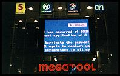
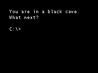

I am not sure whether I don't like computers very much because of my
job, or whether I am an IT consultant despite it. Either way, I figured that I should explain why.
WHY?
Computer software doesn't work; well, not reliably anyway, like a temperamental old juke box that needs the occasional kick. This might be related to the fact that it will be a long time before Information Technology is rigorous enough to be called Information Engineering. After all, if you're a civil engineer you can't say 'sorry, the bridge has crashed - it should be up again tomorrow'.
 Computers appear to be primarily designed to communicate with each other, which is inconvenient if you want to talk to one. Only people who understand how computers (are unable to) think are able to get along with them. Unfortunately, for many people being able to communicate with a computer and being able to communicate with another person are mutually exclusive skills, one way or the other.
Worse yet, computers such as the Macintosh that try to address this problem tend to cause a lot of confusion amongst people who are used to computers, about why they are different and exactly what it is that they achieve.
Personal computers are almost unique amongst things that people put in their houses in that they are generally designed with a complete disregard for aesthetics. Even television sets are more attractive.
Once again computers such as the iMac that address this generate a bizarre level of confusion amongst 'computer people'. This is why computers tend to look just like multi-storey car parks, which are designed for cars, but not for people.
The use of metaphor in user interfaces is an important idea in user interface design, but many common metaphors in graphical user interfaces are hopelessly out of date. I have never used a magnifying glass to look for something, use a wooden clipboard, cut out a piece of paper with text on it and used glue to paste it onto another page, or kept paper files in cardboard folders. How old do you have to be for these metaphors to have physical counterparts in your life?
Even the floppy disk save icon is losing its relevance. Many people using computers today will never use a floppy disk, which makes the icon just another arbitrary symbol.
This page is dedicated to Alex Zeffertt, a real-time systems software developer who doesn't like computers at all. Alex would feel much better if, at the end of a day's work, he followed the guidelines in The Illustrated Guide To Breaking Your Computer.
{kind=link}